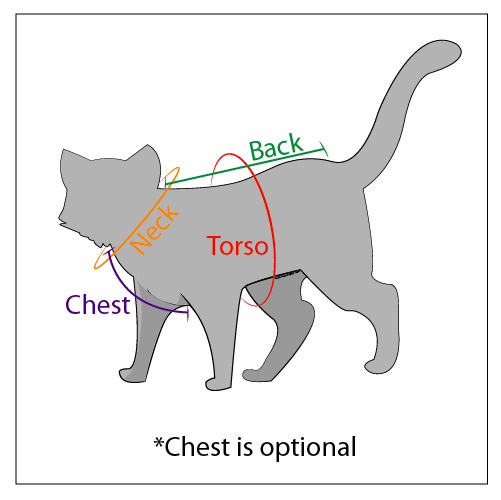

SERVICES
Here at Calico Cat Pants, we pride ourselves on going above and beyond simply providing pants for your feline friends. We believe it is essential and beneficial for potential customers to utilize the following services we offer:
- Price-Matching Guarantee
- Free Measuring Service
- Custom Designs
Because there are many services to explore, we hope that you spend time familiarizing yourselves with what we have to offer. Our company values clarity and attention to detail, so we have done our best to explain our offerings below.
PRICE-MATCHING GUARANTEE
In today’s consumer-driven world, we realize that the key driver in making decisions is cost. Of course, we do not want cost to be one of the reasons you choose not to shop at Calico Cat Pants.
If you find a lower price at a different store, please send us a copy of that listing. From there, we will evaluate that product and match the price. We hope that doing so will lead to gaining your business in both the present and future.
FREE MEASURING SERVICE
We understand that it is not easy to determine a cat’s clothing size, especially if you have never measured a cat before. Consequently, we offer two different options that can help you utilize our cat professionals.
IN-PERSON MEASURING
At our store locations, all employees are trained to measure the size of cats. You can simply arrive at the store, ask an available employee for this service, and they will be happy to help! Our employee will take you and your cat to our measuring center, play some relaxing music for the cat, and offer to teach you how to measure.
ONLINE MEASURING
This offering requires the following steps:
- Schedule an online appointment. You will then receive a zoom link. We recommend looking at this file to learn how to set up Zoom on your computer or phone.
- Before the call, please make sure your cat is calm. This allows for the measuring process to go much more efficiently. Our partners at EntirelyPets have offered ten great tips for ways to relax your cat on their webpage.
- Join the zoom call with measuring tape. The employee will then walk you through all of the measurements. The image below shows all of what will be measured.
- Write down all of the measurements for your future purchase.

CUSTOM DESIGNS
While we at Calico Cat Pants do our best to offer as many products as possible, we would love to see what you can create! Send us sketches, graphic designs, or simply descriptions of pants you want to see on your three-colored cat.
We will then use our pant manufacturing technology to bring your design to life. If we love it so much, we may even make it a continual product of ours!
Questions About Our Services? Email joey.diesen@calicocatpants.com